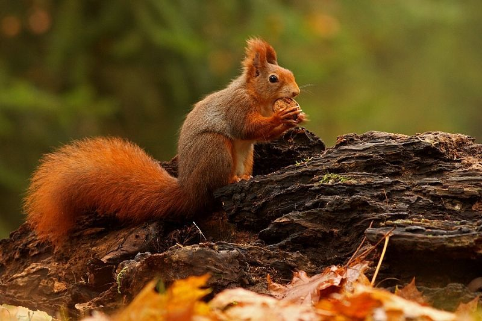
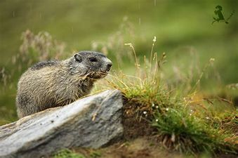
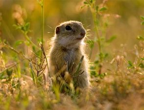

Obecné informace
Cca 270 druhů.
Žijí na stromech, někteří vyhrabávají nory.
Výskyt prakticky všude kromě Austrálie, Madagaskaru a suchých oblastí.
Ochlupený ocas
Živí se rostlinnou stravou, někteří drobným hmyzem
Zástupci
Veverka obecná
Svišť horský
Sysel obecný
Veverka obecná
Vyskytuje se v západní Evropě až východní Asii.
Huňatý ocas, využívá i jako pokrývku.
Vždy dopadají na nohy.
Ostré zakřivené drápky přizpůsobené pro lezení po stromech a dalších površích.
Není vyvinut sexuální dimorfismus.

Svišť horský
Největší zástupce veverkovitých.
Silné drápy uzpůsobeny k vyhrabávání nor.
Rozšířen v Alpách, Tatrách, Pyrenejích.
Živí se rostlinami ale i hmyzem.
Přes zimu hibernuje, počínajíc říjnem.

Sysel obecný
O něco větší než veverka, menší ocas, malé ušní boltce.
Žije v podzemních norách.
Jihovýchodní Evropa a dále na východ, ale vyskytuje se i u nás.
Živí se obilím, kukuřicí a jinými hospodářskými plodinami.
Přes zimu hibernuje.
